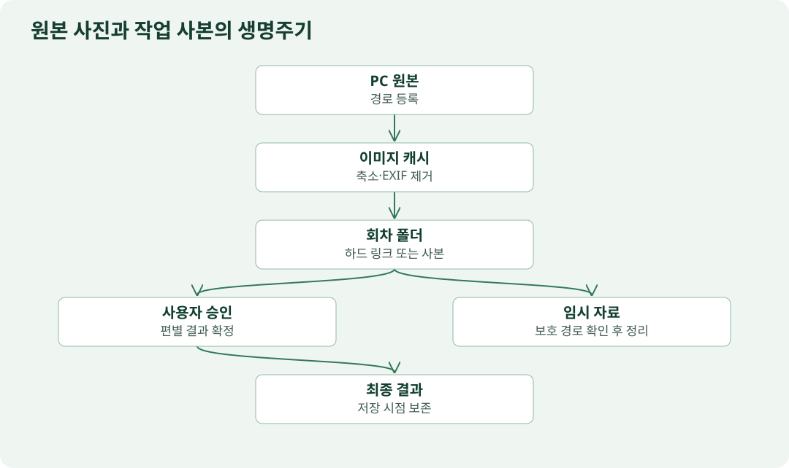
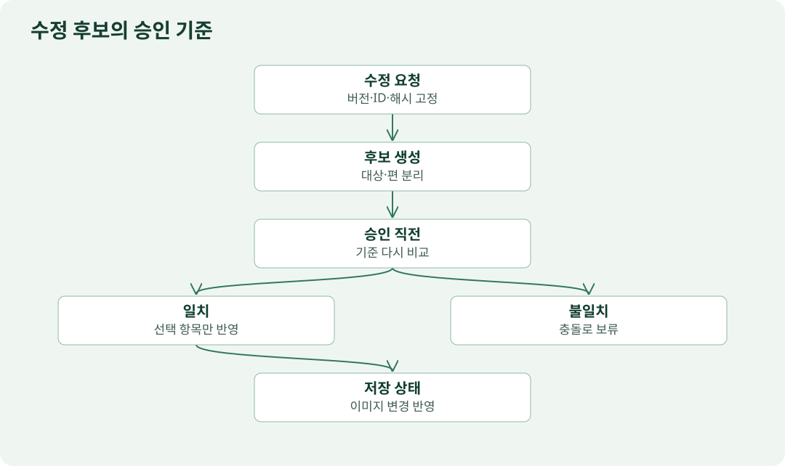
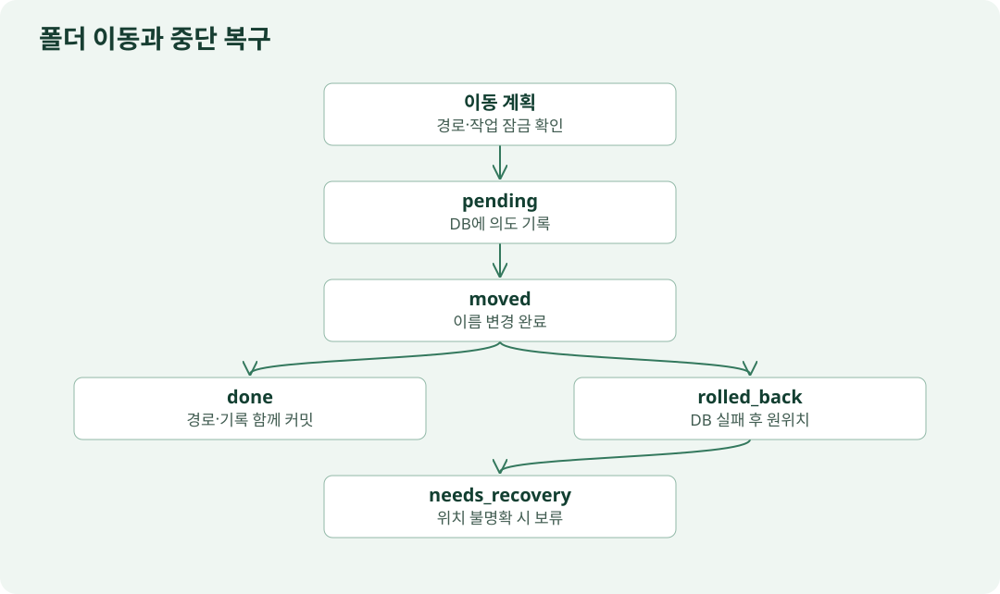
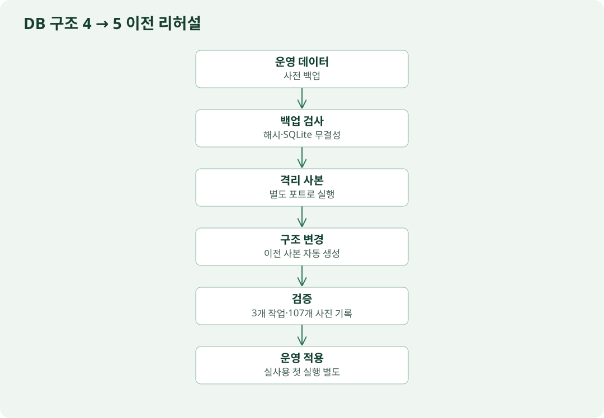

BLOG LAB STUDIO · v0.6.211. 트러블슈팅
최신 결과와 원본을 함께 보호하기
① 반복 내보내기. 원고를 한 번 수정한 뒤 다시 저장하면 같은 내용의 세 번째 사본이 생겼다. 이름 충돌 사본 전체를 크기와 SHA-256으로 비교해 같은 파일을 최신으로 가리킨다. 회귀 테스트에서 세 번째 저장의 복사 목록이 비었다.
② 오래된 수정 후보. 요청 시점의 원고 버전·썸네일 ID·이미지 해시를 보관한다. 승인 직전에 다시 비교하고 충돌 항목은 보류한다. 과거 형식의 저장 기록은 저장 사본과 대조해 이미지 수정의 저장 필요 상태를 복구한다.
③ 폴더 이동. 이름 변경과 DB 경로 갱신 사이에 중단될 수 있다. 이동 전 의도를 기록하고 DB 업데이트 실패 시 원래 이름으로 되돌린다. 재시작 시 원래 위치와 목적지를 대조해 한쪽만 확인되면 정리하고, 양쪽 모두 있거나 없으면 수동 복구로 남긴다.
④ DB 이전. 자동 사본을 만든 뒤 스키마와 버전 변경을 한 트랜잭션으로 처리한다. 백업 파일 38개의 해시를 확인한 기록에는 원본 대비 데이터·참고자료 34개가 포함된다. 사본 리허설에서 작업 3개·사진 기록 107개·음악 기록 5개와 SQLite 무결성을 확인했다.

원본 사진과 작업 사본의 생명주기 폴더 내 반복 저장
폴더 내 반복 저장
수정 후보의 승인 기준
폴더 이동과 중단 복구
DB 구조 4 → 5 이전 리허설